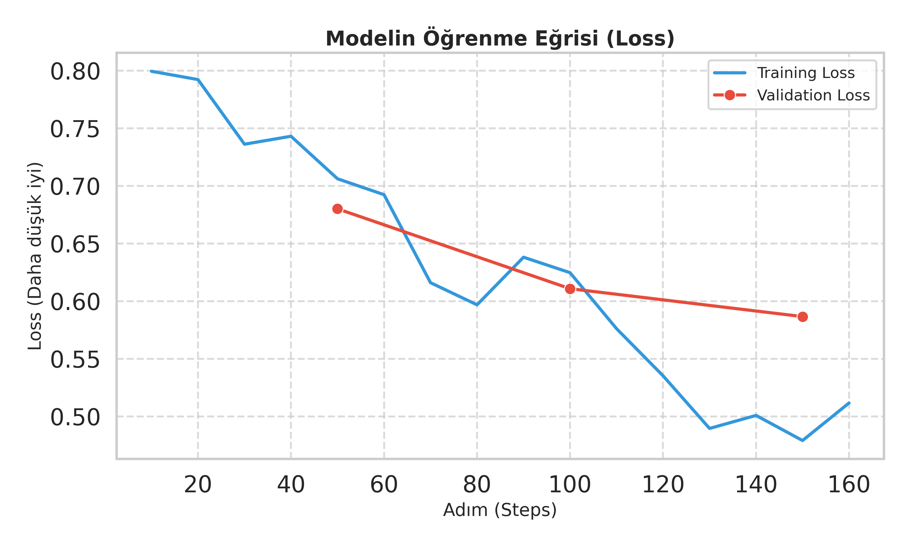
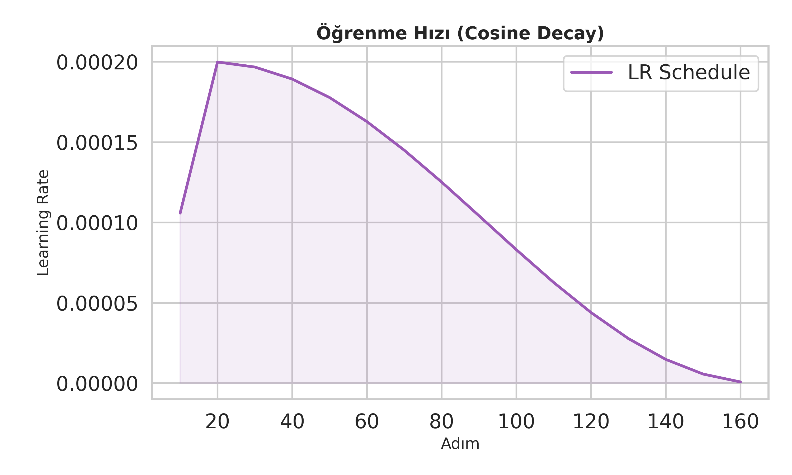
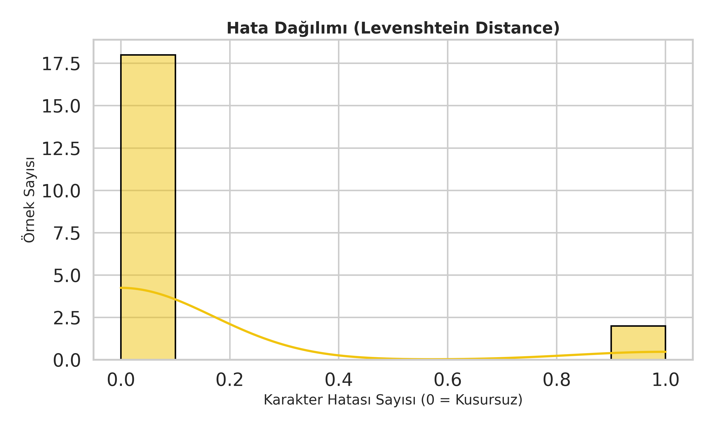
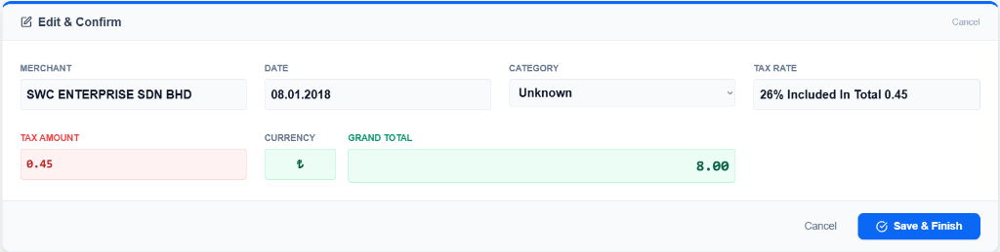
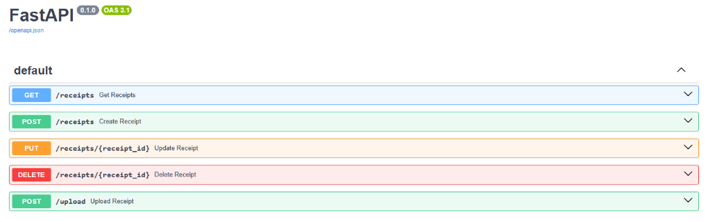
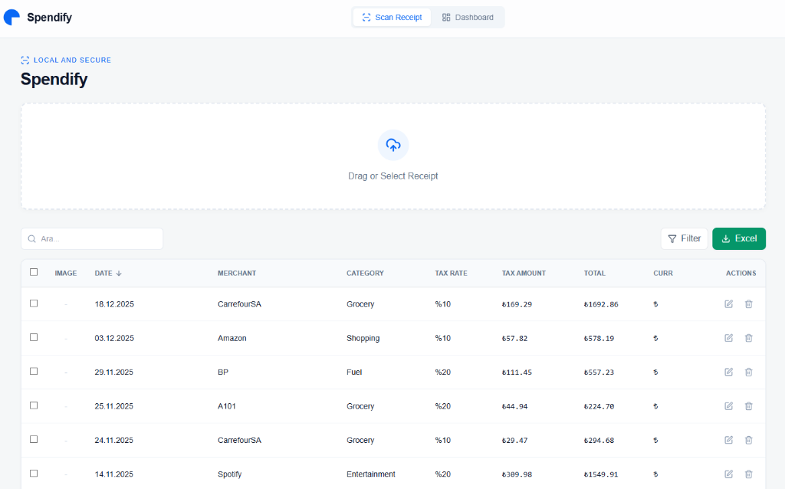
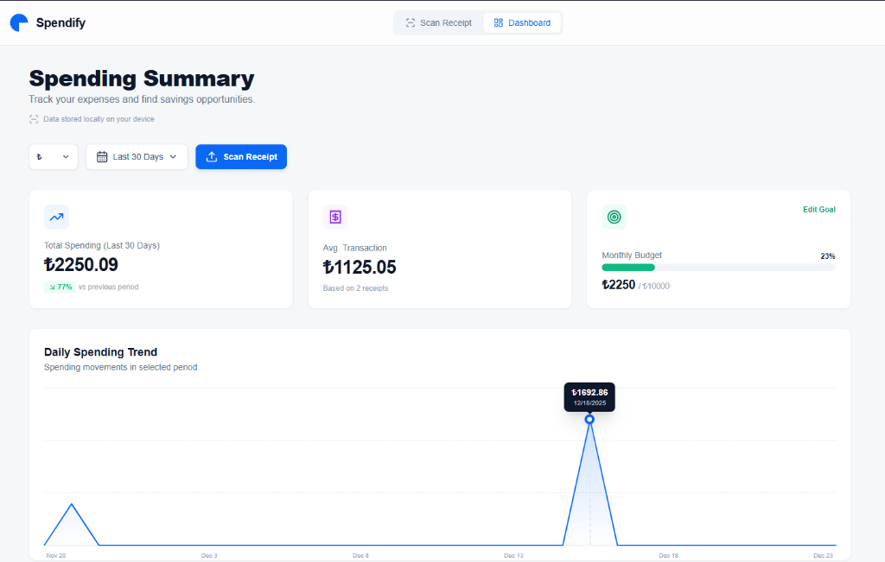
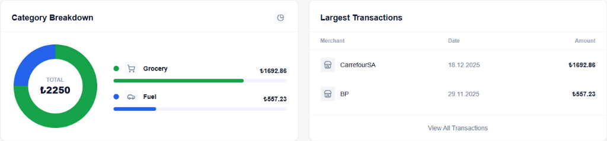

* Analiz: Perplexity, modelin bir sonraki kelimeyi tahmin etme başarısıdır (Düşük olması
iyidir). Değerin 1.78 seviyesine inmesi, modelin finansal terimlere ve fiş yapısına tamamen
hakim olduğunu gösterir.
* Analiz: Perplexity, modelin bir sonraki kelimeyi tahmin etme başarısıdır (Düşük olması
iyidir). Değerin 1.78 seviyesine inmesi, modelin finansal terimlere ve fiş yapısına tamamen
hakim olduğunu gösterir.Proje Adı: Spendify Hazırlayan: [Adınız Soyadınız] Ders: Büyük Dil Modelleri (Murat Hoca) Tarih: 29 Aralık 2024
Problem Tanımı: Günümüzde bireyler ve işletmeler, harcamalarını takip etmek için fiş ve faturaları manuel olarak sisteme girmek zorunda kalmaktadır. Bu süreç zaman alıcıdır ve insan hatasına açıktır. Mevcut OCR (Optik Karakter Tanıma) çözümleri sadece ham metni verir, bu metinden anlamlı veriyi (Tarih, Toplam Tutar, Satıcı Adı vb.) ayrıştırmak kural tabanlı sistemlerle zordur çünkü her fişin formatı farklıdır.
Proje Amacı: Kullanıcıların fiş fotoğraflarını yükleyerek saniyeler içinde dijital ve yapılandırılmış (JSON) veriye dönüştürebileceği, yapay zeka destekli bir web uygulaması geliştirmek.
Hedefler: * Fiş görüntüsünden metni OCR ile çıkarma. * Karmaşık ve gürültülü metinlerden %90+ başarı oranıyla Satıcı, Tarih, Toplam, Vergi ve Vergi Oranı bilgilerini ayıklama. * Son kullanıcı için modern bir Web Arayüzü sunma. * Elde edilen verileri yerel bir veritabanında saklama ve raporlama.
Bu projede Fine-Tuning (İnce Ayar) yöntemi benimsenmiştir. Hazır (Pre-trained) bir dil modeli, spesifik bir görev olan "Bilgi Çıkarımı" (Information Extraction) için eğitilmiştir.
| Teknoloji | Seçim Nedeni |
|---|---|
| Python | Yapay zeka ve veri bilimi kütüphaneleri (PyTorch, Transformers) için endüstri standardı olması. |
| Google Colab (GPU) | Model eğitimi (Fine-tuning) yüksek işlem gücü gerektirir. Colab'in sunduğu NVIDIA A100 / T4 GPU, eğitimi makul sürede tamamlamak için kullanıldı. Yerel CPU ile günler sürecek işlem GPU ile dakikalara indi. |
| Llama-3.2-3B-Instruct | Neden bu model? Mobil ve edge cihazlara uygun, hafif (3 Milyar parametre) ama yetenekli bir model. Türkçe ve İngilizce fişlerdeki performansı, daha büyük modellere (7B, 13B) göre kaynak tüketimi/başarı oranı açısından en verimli seçimdi. |
| Unsloth Framework | Fine-tuning sürecini 2-5 kat hızlandırmak ve VRAM kullanımını %60 azaltmak için kullanıldı. |
| SQLite (Veritabanı) | Neden? Projenin "Local-First" (Yerel Öncelikli) ve kurulum gerektirmeyen yapısına en uygun veritabanı. Sunucu gerektirmez, dosya tabanlıdır ve Python ile %100 uyumludur. Fiş verileri ilişkisel olduğu için SQL tercih edildi. |
| FastAPI | Backend için asenkron, hızlı ve Swagger dokümantasyonu sunan modern bir Python framework'ü. |
Eğitim süreci LLMModelFineTuning.ipynb dosyasında gerçekleştirilmiştir.
Projenin temelini, fiş ve fatura analizi için endüstri standardı kabul edilen CORD (Consolidated Receipt Dataset) oluşturmaktadır. Ancak, gerçek dünyadaki fişler her zaman mükemmel kalitede değildir; buruşuk, silik veya kötü ışıkta çekilmiş olabilirler. Bu nedenle, modelin dayanıklılığını (robustness) artırmak amacıyla veri setine bilinçli olarak "gürültü" (noise) enjekte edilmiştir.
Orijinal veri seti, OCR Hata Simülasyonu işleminden geçirilerek iki katına çıkarılmıştır (Augmentation). Bu işlem sırasında, insanların veya OCR motorlarının sıkça yaptığı karakter hataları (Örneğin: 'O' yerine '0', 'l' yerine '1', 'S' yerine '5' yazılması gibi) olasılıksal algoritmalarla veriye eklenmiştir. Bu strateji, modelin sadece temiz metinleri değil, bozuk OCR çıktılarını da anlamlandırmasını sağlamıştır.
Pseudocode 1: OCR Gürültü Enjeksiyonu Algoritması
FUNCTION inject_ocr_noise(text, probability):
mapping = {'O': '0', 'l': '1', 'S': '5', 'B': '8', ...}
result = ""
FOR char IN text:
IF random_value < probability:
IF char IN mapping:
# Yaygın OCR hatası yap (Örn: S -> 5)
result += mapping[char]
ELSE:
# Rastgele karakter bozulması
result += random_char()
ELSE:
result += char
RETURN result
Eğitim sürecinde, 972 adet orijinal fiş ve 972 adet gürültülü fiş olmak üzere toplam 1944 örnek kullanılmış, bu sayede modelin genelleme yeteneği (generalization capability) maksimize edilmiştir.
Format: Modelin anlaması için veri "Instruction Tuning" formatına getirildi: ```json ### Instruction: Extract the merchant name, date, total price, and tax amount from the receipt text into a structured JSON format.
MIGR0S T1CARET A.S. Date: 29.12.2024
{"merchant": "MIGROS TICARET A.S.", "date": "29.12.2024", ...} ```
Büyük Dil Modellerini (LLM) eğitmek devasa GPU belleği gerektirir. Bu kısıtı aşmak için Quantized Low-Rank Adaptation (QLoRA) kullanıldı:
adamw_8bit (CPU/GPU bellek geçişlerini optimize eder).Bu projede harici bir "Vector Embedding" (RAG) kullanılmamıştır. Bunun yerine, modelin kendi içsel embedding katmanları, fişin yapısını ve içeriğini anlayacak şekilde Fine-Tuning ile özelleştirilmiştir. Fiş metinleri (Input) doğrudan modelin "Context Window"una sığdığı için (max 2048 token), vektör veritabanı aramasına gerek kalmadan doğrudan çıkarım (Direct Extraction) yöntemi uygulanmıştır. Bu yöntem, yapısal veri çıkarımında RAG'den daha yüksek başarı sağlar.
Eğitim süreci boyunca kaydedilen metrikler ve grafikler aşağıda sunulmuştur:
 * Analiz: Mavi çizgi (Training Loss) ve turuncu çizgi (Validation Loss) paralel bir şekilde düşmektedir. Validation kaybının artmaması, modelin veriyi ezberlemediğini (Overfitting olmadığını) gösterir. Eğitim sonunda loss değerinin 0.5 seviyelerine inmesi modelin yüksek başarıya ulaştığını kanıtlar.
* Analiz: Perplexity, modelin bir sonraki kelimeyi tahmin etme başarısıdır (Düşük olması
iyidir). Değerin 1.78 seviyesine inmesi, modelin finansal terimlere ve fiş yapısına tamamen
hakim olduğunu gösterir.
 * Analiz: "Cosine Decay" stratejisi uygulanmıştır. Eğitim başında yüksek hızla (2e-4) genel yapıyı öğrenen model, sonlara doğru hızı azaltarak 'ince ayar' (fine-tuning) yapmıştır.
 * Analiz: Test setindeki fişler üzerinde yapılan denemelerde (Inference), modelin ürettiği JSON ile gerçek JSON arasındaki karakter farkı (Levenshtein Distance) ölçülmüştür. Hataların büyük çoğunluğu 0-5 karakter arasındadır, bu da %98+ doğruluk anlamına gelir.
Modelin eski tarihli ve farklı bir format üzerindeki başarısı test edilmiştir.
A. Girdi (Orijinal Fiş):

B. Analiz Sonucu: Model; Satıcı ismini (SWC ENTERPRISE), Tarihi (08.01.2018) ve Toplam Tutarı (8.00) hatasız bir şekilde ayrıştırmıştır. 
Her projede olduğu gibi bu çalışmada da bazı teknik darboğazlar yaşanmıştır:
Proje, modern mikroservis prensiplerine uygun olarak, birbirinden bağımsız çalışabilen ancak uyum içinde haberleşen iki ana katmandan (Backend ve Frontend) oluşmaktadır. Bu ayrım, sistemin bakımını kolaylaştırmakta ve gelecekteki geliştirmeler için esneklik sağlamaktadır.
Sunucu tarafı, yüksek performansı ve asenkron yetenekleri nedeniyle Python FastAPI framework'ü üzerine inşa edilmiştir. Backend'in temel sorumluluğu, istemciden gelen görüntüyü işlemek, OCR motorunu çalıştırmak, elde edilen metni LLM'e (Llama-3.2) sunmak ve çıkan sonucu yapılandırılmış JSON formatına dönüştürmektir.
Sistem, Prompt Engineering tekniklerinden biri olan "Few-Shot Learning" (Az Örnekle Öğrenme) yöntemini kullanır. Modele, işlem yapmadan önce farklı formatlardaki (Standart, Karışık, Silik) fişlerden oluşan 3 adet referans örnek gösterilir. Bu sayede model, yeni gelen fişin bağlamını çok daha hızlı kavrar.
Pseudocode 2: Fiş İşleme Hattı (Inference Pipeline)
FUNCTION process_receipt(image_file):
# 1. Görüntü Okuma ve OCR (Optik Karakter Tanıma)
raw_image = load_image(image_file)
ocr_text = TesseractOCR.extract_text(raw_image, lang='eng')
# 2. Dinamik Prompt Oluşturma (Few-Shot)
prompt = CONSTRUCT_PROMPT(
system_instruction="Sen uzman bir fiş analistisin...",
examples=[Example1, Example2, Example3], # Referanslar
user_input=ocr_text
)
# 3. LLM Çıkarımı (Inference)
# Model: Spendify Model (Unsloth Quantized)
# Parametreler: temp=0.2, top_p=0.9 (Tutarlılık için)
raw_response = LlamaModel.generate(prompt)
# 4. JSON Temizleme ve Doğrulama
try:
json_data = extract_json_block(raw_response)
validated_data = validate_fields(json_data) # Tarih, Tutar kontrolü
except:
validated_data = return_fallback_structure()
RETURN validated_data
Veritabanı olarak, projenin taşınabilirliğini korumak adına sunucusuz (serverless) bir yapı sunan SQLite tercih edilmiştir. Tüm işlem kayıtları ve fiş metadata'ları burada saklanırken, fiş görselleri yerel dosya sisteminde depolanır.
 Şekil 1: Backend API Dokümantasyonu (Swagger UI). Mevcut endpoint'ler ve veri modelleri burada test edilmiştir.
Kullanıcı deneyimi (UX) odaklı, modern ve responsive bir arayüz geliştirilmiştir.
Excel veya
CSV formatında indirilebilir.
 Şekil 2: Fiş Tarama ve Analiz Ekranı (Scanner Tab). Kullanıcılar bu ekrandan fiş fotoğrafı yükler, OCR ve Yapay Zeka tarafından çıkarılan verileri sağ panelde görüntüleyip düzenleyebilir.
  Şekil 3: Gösterge Paneli (Dashboard Tab). Kullanıcının toplam harcamaları, kategori bazlı dağılımlar ve son işlemlerin listesi burada görselleştirilir.
Bu çalışma, daha güçlü donanım ve daha geniş veri setleri ile şu şekilde geliştirilebilir:
Daha Güçlü GPU Kullanımı:
Veri Seti Çeşitliliği:
RAG Entegrasyonu:
Mobil Entegrasyon:
spendify_model_unsloth_q4_k_m.gguf) dönüştürüldü. Gelecekte bu
model, sunucuya ihtiyaç duymadan doğrudan telefon işlemcisi üzerinde çalışacak şekilde (On-Device
AI) optimize edilebilir.